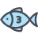
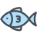

스페셜 아이템

강화 오리
수 년간의 노력을 통해서 개발자로 거듭난 개발자 오리
마력의 물고기
사람의 마음을 읽는 초능력을 가진 수륙양용 물고기
숫 사슴
암사슴이 될뻔했던 숫사슴
저녘에 방문해 주시면 추천 아이템 말고 다른 아이템을 보실 수가 있습니다.
수 년간의 노력을 통해서 개발자로 거듭난 개발자 오리
사람의 마음을 읽는 초능력을 가진 수륙양용 물고기
암사슴이 될뻔했던 숫사슴
저녘에 방문해 주시면 추천 아이템 말고 다른 아이템을 보실 수가 있습니다.
공공데이터 융합 과정에서는 24명의 학생이 있습니다. 잠깐 들러서 이야기를 나누어보세요. 또한, 기다리는 동안 무료 음료도 제공해 드리고 있습니다.
학원 내에서는 무료 와이파이를 제공해 드리고 있으며, 별이 다섯개(★★★★★)인 학생인 재민님도 만날 수 있습니다. 학원에서는 즐거운 일들이 가득 합니다. 가능하면 많은 분들이 모여서 즐거운 이야기와 공부를 해주세요. 단, 노트북은 가져오시면 좋습니다.
보증서 : 공공데이터 학생들은 노동부에서 검증을 받은 별 다섯개(★★★★★)받은 훌륭한 학생들 입니다. 이러한 학생들도 만족하지 못하신다면, java·database·HTML 책을 무료로 드립니다. 이정도로 훌륭한 시스템을 제공해주는 공공데이터 과정에 놀러오세요
공공데이터 과정에 오시면 즐거운 음악을 들으 실 수 있습니다. 기타, 베이스, 하프, 리코더 등 여러분의 요청에 따라서 신나게 반주해 드립니다. 언제든지 오셔서 휴식을 취하세요
저희 공공데이터 과정의 장소를 알려 드립니다. 구디아카데미는 가산역에 위치하고 있습니다. 상세약도를 보시면 눈깜짝할 사이에 방향을 아실 수 있습니다. 예약(2개월 이전)도 받고 있습니다. 언제든지 방문해 주세요
제공되는 과목의 종류는 하루하루 커리큘럼에 따라 달라집니다. 항상 최고의 교육과목을 제공해 드리고 있습니다. 이번달의 제공되는 과목은 다음과 같습니다.